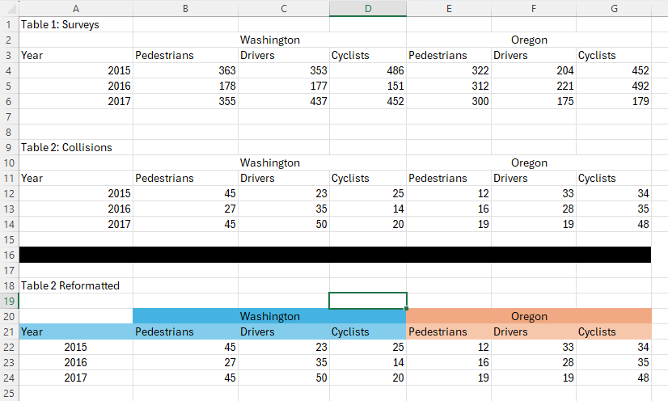
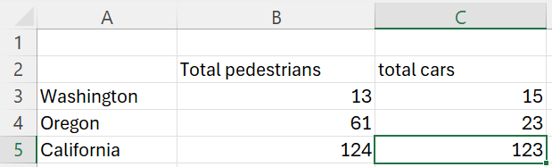

Importing from Excel
We often work with complex excel files that have formatting choices that make sense for human use but not for machines. Here is a dummy example:

We have several potential issues with automation scripts that are supposed to work with this file.For each individual table, our headers are split across multiple rows, including merged cells.
If each table is being updated each year with a new row of content (common situation for some of our projects), our scripts will break over time if they’re referencing absolute row numbers or cell ranges. If we wanted table 1 data, right now we could read in A4:G6, but next year we would need A4:G7. And for table 2, this year we need A12:G14, but next year we would presumably need A13:G16.
So that you can follow along, we have included this example file in
this package. Its filepath can be accessed with
system.file("extdata", "example_workbook.xlsx", package = "excelsior")
filepath <- system.file("extdata", "example_workbook.xlsx", package = "excelsior")The example is in the first sheet, which has the default label of “Sheet1”.
Dealing with multi-tier headers
First, let’s assume we’re okay with absolute row numbers, and we just
want to read in table 1 such that the headers actually make sense.
read_excel_tiered_headers() tackles this task.
First, here’s the problem we run into if we read the table in using something like readxl:
data <- readxl::read_excel(filepath, sheet = "Sheet1", range = "A2:G6")
#> New names:
#> • `` -> `...1`
#> • `` -> `...3`
#> • `` -> `...4`
#> • `` -> `...6`
#> • `` -> `...7`
data
#> # A tibble: 4 × 7
#> ...1 Washington ...3 ...4 Oregon ...6 ...7
#> <chr> <chr> <chr> <chr> <chr> <chr> <chr>
#> 1 Year Pedestrians Drivers Cyclists Pedestrians Drivers Cyclists
#> 2 2015 363 353 486 322 204 452
#> 3 2016 178 177 151 312 221 492
#> 4 2017 355 437 452 300 175 179Our column labels are no good. Most of them are blank, Washington and Oregon are listed only for the first columns of the merged “Washington” and “Oregon” columns, and the “pedestrians”, “drivers”, “cyclists” information is not accessible in the column names. And because one of our rows of labels is included in the data, all columns are characters, even though our data is all numerics.
read_excel_tiered_headers() fixes these problems.
data <- read_excel_tiered_headers(filepath,
sheet = "Sheet1",
header_rows = 2:3,
final_data_row = 6
)
data
#> Year Washington_Pedestrians Washington_Drivers Washington_Cyclists
#> 4 2015 363 353 486
#> 5 2016 178 177 151
#> 6 2017 355 437 452
#> Oregon_Pedestrians Oregon_Drivers Oregon_Cyclists X
#> 4 322 204 452 NA
#> 5 312 221 492 NA
#> 6 300 175 179 NALet’s break that function call down. We need to specify the file
location and the sheet (as either the index number of the sheet or the
sheet name). The only other necessary part is providing the row numbers
of the header rows in argument header_rows. This must be a
numeric vector, but can include any number of rows and they don’t have
to be consecutive.
By default, read_excel_tiered_headers() assumes the data
starts one row after the last header row and ends in the last active row
of the sheet. However, these can be specified explicitly with
first_data_row (useful if there is a vertical gap between
headers and data) and last_data_row (useful if there are
multiple tables on the sheet). Here we used
final_data_row = 6 since we only want the contents of Table
1 rather than everything down to row 24. We’ll look at how to
automatically determine row numbers in the next section.
By default, read_excel_tiered_headers() assumes we want
to pull all the active columns in the row range. We can provide values
for first_column and/or final_column (as
numerics) to constrain what is read in. In our example, there is a
formatted-but-empty cell in column H (the 8th column), hence our empty
X column in the resulting dataframe. We can fix this by
including final_column = 7:
data <- read_excel_tiered_headers(filepath,
sheet = "Sheet1",
header_rows = 2:3,
final_data_row = 6,
final_column = 7
)
data
#> Year Washington_Pedestrians Washington_Drivers Washington_Cyclists
#> 4 2015 363 353 486
#> 5 2016 178 177 151
#> 6 2017 355 437 452
#> Oregon_Pedestrians Oregon_Drivers Oregon_Cyclists
#> 4 322 204 452
#> 5 312 221 492
#> 6 300 175 179Finally, by default read_excel_tiered_headers combines
the headers of different rows with an underscore. However, if you want
to use a different character or characters to separate these, you can
change that behavior with the sep argument.
Our goal is to make the translation between excel and R as direct as
possible, so we do not attempt to change header capitalization. However,
if you want cleaner column labels where label separators are all
underscores and text is always lowercase, you easily achieve this by
piping the output of read_excel_tierd_headers() into
janitor::clean_names:
data <- read_excel_tiered_headers(filepath,
sheet = "Sheet1",
header_rows = 2:3,
final_data_row = 6,
final_column = 7
) |>
janitor::clean_names()
data
#> year washington_pedestrians washington_drivers washington_cyclists
#> 4 2015 363 353 486
#> 5 2016 178 177 151
#> 6 2017 355 437 452
#> oregon_pedestrians oregon_drivers oregon_cyclists
#> 4 322 204 452
#> 5 312 221 492
#> 6 300 175 179Identifying rows via “anchor cells”
How can we write scripts to interact with multi-table worksheets in which additional rows may be added over time? This is not a problem that occurs when there is only one table in the worksheet, such that our headers are on some fixed rows (e.g., 1, 2, and 3, or 2 and 3) and we want to read everything down to the final row of the worksheet. However, like in our example, we often encounter worksheets that are set up to contain multiple tables stacked vertically. If additional rows may be added to each table, we need to adaptively identify start and end rows of each table.
The approach we take in excelsior is to focus on
identifying “anchor cells” which serve as landmarks to identify
individual tables or sections of the worksheet. We have two ways to find
anchor cells. The first is based on the contents of the anchor cell;
commonly this will be a table name (e.g., “Table 2: Collisions”) or
other metadata text, or it could be a column header (e.g., “Year”).
row_finder() can tackle these problems. The second method
is to identify the anchor cell by fill color. This is probably
niche, but we work with several files that use bars of black-filled
cells to distinguish sections. row_finder_by_color() can
tackle this case.
Our functions presume that columns are not removed or added, just that rows might be, so we can specify the column of the anchor cell, and then our functions can find the correct rows.
row_finder()
Let’s say we want to programmatically read in table 2 in our example. Right now the headers start on row 10 and the data ends on row 14. We want to identify the start and end rows based on the table’s location in the sheet, which right now should give us those same row numbers of 10 and 14.
A good anchor cell for the start of table 2 would be the table header, “Table 2: Collisions”. Here’s how we find that:
table_2_start_row <- row_finder(filepath,
sheet = "Sheet1",
column = 1,
pattern = "Table 2: Collisions")
table_2_start_row
#> [1] 9Let’s break that down. After identifying the file and the sheet, we
told row_finder what column to look in, and then gave it a
text pattern with the pattern argument.
(Pro tip: the pattern argument handles regular
expressions, so you can do more complicated things like “cell that
starts with Table 2”, "^Table 2", or any other regular
expression tricks.)
However, our table doesn’t necessarily start on the row of the anchor
cell – the cell is just a convenient way to generally locate the table.
In our case, the table starts one row after the anchor cell. We can do
some arithmetic after the fact, e.g., read in starting from row
table_2_start_row + 1. For simplicity, though,
row_finder() has an optional argument offset.
row_finder() will add or subtract the offset
value from whatever row the anchor cell is on. So here, we could use
table_2_start_row <- row_finder(filepath,
sheet = "Sheet1",
column = 1,
pattern = "Table 2",
offset = 1)
table_2_start_row
#> [1] 10What if we didn’t have table headers, though? We might want to use “Year” as our anchor cell. But we run into a problem: “Year” already occurs earlier in Column A, on row 3:
row_finder(filepath,
sheet = "Sheet1",
column = 1,
pattern = "Year")
#> [1] 3The optional argument instance lets us use anchor
patterns in which more than one cell in the column matches. By default
row_finder has instance = 1, so it will return
the first cell that matches the pattern. We can get the second instance
of “Year” with
row_finder(filepath,
sheet = "Sheet1",
column = 1,
pattern = "Year",
instance = 2)
#> [1] 11And then if we were using this to identify the start of the table, we
would want to add offset = -1, since the table starts one
row above the anchor cell.
row_finder_by_color
How would we identify the bottom of Table 2? One option would be to
use row_finder with anchor cells from the third table chunk
(“Table 2 Reformatted”) and appropriate offsetting. E.g.,
row_finder(filepath,
sheet = "Sheet1",
column = 1,
pattern = "Table 2 Reformatted",
instance = 1,
offset = -4)
#> [1] 14An alternative that can be more useful in some cases is to identify the first (or nth) instance of a cell with a specified fill color. In our example, we can identify the black-filled row programmatically.
First, it’s helpful to know the fill color of a cell in R hex terms.
The function find_fill_color() does this for us. Let’s find
the fill of the current A16 cell.
find_fill_color(filepath,
sheet = "Sheet1",
address = "A16")
#> [1] "FF000000"So now we know we want to find cells with a fill of “FF000000”. Note
that we don’t want to use find_fill_color()
programmatically within our scripts (e.g.,
target_color = find_fill_color(filepath, sheet = "Sheet1", address = "A16"),
since we’re assuming that the contents may shift rows, such that “A16”
may not be the black-filled row in the future.
row_finder_by_color() works the same as
row_finder, except that instead of pattern we
give color.
row_finder_by_color(filepath,
sheet = "Sheet1",
column = 1,
color = "FF000000")
#> [1] 16We can also specify instance (defaults to
1) or offset (defaults to 0). For
this case, we might use an offset of -2, which would give us the bottom
of table 2 (row 14):
row_finder_by_color(filepath,
sheet = "Sheet1",
column = 1,
color = "FF000000",
offset = -2)
#> [1] 14Putting it all together
Let’s combine what we’ve learned to read in and parse table 2 programmatically so that adding rows to table 2 or previous tables doesn’t mess things up. We already know the first two rows of the table are header; we’ll assume that’s not going to change.
## find start of table based on table header
table_2_start_row <- row_finder(filepath,
sheet = "Sheet1",
column = 1,
pattern = "Table 2",
offset = 1)
## find end of table based on row of black-filled cells
table_2_end_row <- row_finder_by_color(filepath,
sheet = "Sheet1",
column = 1,
color = "FF000000",
offset = -2)
## read in the table, handling multi-tiered headers appropriately
table_2 <- read_excel_tiered_headers(filepath,
sheet = "Sheet1",
header_rows = table_2_start_row:(table_2_start_row + 1),
final_data_row = table_2_end_row,
final_column = 7
)
table_2
#> Year Washington_Pedestrians Washington_Drivers Washington_Cyclists
#> 12 2015 45 23 25
#> 13 2016 27 35 14
#> 14 2017 45 50 20
#> Oregon_Pedestrians Oregon_Drivers Oregon_Cyclists
#> 12 12 33 34
#> 13 16 28 35
#> 14 19 19 48You can test if this works correctly by making a copy of the excel
file and adding additional rows above table 2 and adding additional data
rows to table 2. The code above should still correctly read in
all of the table (although you’ll need to update the
filepath variable to point to your new copy of the
file.
Caution
One word of warning: sometimes users may change the number of empty buffer rows around a table. This can make relying on offsets a little sketchy. For example, what if a user added an additional row of data for table 2 in row 15, but didn’t move the black bar down. Our code above would skip the data in row 15. (You can try this with a copy of the spreadsheet).
A safer approach if you’re uncertain of if the number of empty buffer rows may change is to be more inclusive with the rows you read in, and then afterwards remove rows that are all NAs or for which the first column is an NA. Here’s an example of that, in which I am more conservative with handling the buffers around the black bar.
table_2_end_row <- row_finder_by_color(filepath,
sheet = "Sheet1",
column = 1,
color = "FF000000",
offset = 0) ## THIS IS NOW GRABBING THE BLACK BAR ROW ITSELF
table_2 <- read_excel_tiered_headers(filepath,
sheet = "Sheet1",
header_rows = table_2_start_row:(table_2_start_row + 1),
final_data_row = table_2_end_row,
final_column = 7
)
table_2
#> Year Washington_Pedestrians Washington_Drivers Washington_Cyclists
#> 12 2015 45 23 25
#> 13 2016 27 35 14
#> 14 2017 45 50 20
#> 15 NA NA NA NA
#> 16 NA NA NA NA
#> Oregon_Pedestrians Oregon_Drivers Oregon_Cyclists
#> 12 12 33 34
#> 13 16 28 35
#> 14 19 19 48
#> 15 NA NA NA
#> 16 NA NA NAWe now have several rows of NAs. We know we got all the data, but it’d be nice to not have those extra rows.
One option: use only rows in which the entry in the “Year” column is not an NA:
table_2 |>
dplyr::filter(!is.na(Year))
#> Year Washington_Pedestrians Washington_Drivers Washington_Cyclists
#> 1 2015 45 23 25
#> 2 2016 27 35 14
#> 3 2017 45 50 20
#> Oregon_Pedestrians Oregon_Drivers Oregon_Cyclists
#> 1 12 33 34
#> 2 16 28 35
#> 3 19 19 48In this example, option 1 works great. However, what if the data sometimes contains “natural” NAs in our columns? Another option is to remove any rows that contain only NAs:
only_nas <- apply(table_2, 1, function(x){all(is.na(x))})
only_nas
#> 12 13 14 15 16
#> FALSE FALSE FALSE TRUE TRUE
table_2[!only_nas, ]
#> Year Washington_Pedestrians Washington_Drivers Washington_Cyclists
#> 12 2015 45 23 25
#> 13 2016 27 35 14
#> 14 2017 45 50 20
#> Oregon_Pedestrians Oregon_Drivers Oregon_Cyclists
#> 12 12 33 34
#> 13 16 28 35
#> 14 19 19 48Helper functions
We have several helpful functions for working with excel files.
I need to replicate contents from an excel file into an R script
clip_to_vec() takes a row or column that’s been copied
to your system clipboard and replaces the system clipboard to the R code
needed to recreate that row/column as vector. For example, if I select
the “Pedestrians” column in Table 1 (B4:B6) and copy (e.g., ctrl-c),
then run clip_to_vec() in R, when I go to paste (e.g.,
ctrl-v), I get the following:
c(363, 178, 355)
This is mostly helpful if you want to hard code something in R based on the contents of an excel file.
Help, the numeric contents I read in from excel have a weird mix of formatting!
This is especially common if different rows have different types of content (e.g., a mix of percents and numbers), since R will assign a single format to an entire column.
as_numeric_smart() takes a character vector that you
want to be numeric, and (a) removes commas, (b) converts percentages to
proportions, and (c) converts actual text to NAs.
original_column = c("1,000", "10%", "5.5", "missing")
as_numeric_smart(original_column)
#> [1] 1000.0 0.1 5.5 NAExporting to Excel / Copying between Excel
We sometimes need to add a dataframe from R into an excel file, or
transfer parts of a sheet from one file to another programmatically. The
functions in this section help with that. They all work with
openxlsx2 workbook objects, so you will need to load in
excel files as workbook objects with openxslx2::wb_load()
and save your results afterwards with openxlsx2::wb_save().
For more information on the openxlsx2 package, see https://janmarvin.github.io/openxlsx2/.
Dataframe into Excel
implant_df() pops a dataframe into an openxlsx2
workbook. This is similar to openxlsx2::wb_add_data(), but
(a) includes a debug mode that instead colors the cells that would be
updated, making it easy to confirm that you’re placing the dataframe in
the right place, and (b) by default converts the dataframe contents to
numerics when appropriate using as_numeric_smart(). Think
of this as just a handy advanced version of
wb_add_data()
Copying contents safely
copy_section() copies part of a sheet into a workbook.
This is basically a way to say “Copy C3:D4 from sheet 1 to E5:F6 of
sheet 2”, but with some important safety features to avoid mistaken
behavior if aspects of the sheet change. This was developed for working
with complex annual files, in which we might want to copy values from a
template file into the same set of cells of a new annual file, but we
need to be sure that the shape of the files didn’t change. The function
allows defining reference columns or headers by offset.
As an example, imagine we are want to copy the numbers of B3:C5 from the following into a different sheet or workbook:

And what if we don’t trust that the order of Washington, Oregon, and California will be kept consistent between years? Or we think it’s possible that users would have added a new “notes” column between total pedestrians and total cars. Normally we might just copy in the row and column headers to be safe. But if we’re copying the contents into a sheet with address-based formulas that treat Washington and Oregon values differently, it’s not enough to make sure the state labels are correct in the resulting sheet – we need to have an error pop up if they’ve been re-arranged.
optional arguments check_col_offset and
check_row_offset provide solutions to this problem.
check_col_offset allows the user to specify a reference
column that should match between the copy-from and copy-to sheets. If we
set check_col_offset = 1, copy_section() will
make sure that the column just to the left of the copy-from block
exactly matches the left the column just to the left of the copy-to
block. check_row_offset() does the same thing, but compares
reference rows (e.g., making sure the headers exactly match). In our
example, we would use from_address = "B3:C5",
check_row_offset = 1 (row above the copied data show match)
and check_col_offset = 1 (column to the left of the copied
data should match).
For speed purposes, copy_section() actually uses a
dataframe as the copy-from object, with the expectation that that
dataframe will be a complete read-in of an excel sheet. So it’s copying
from a dataframe into an openxlsx2 workbook, but with
the expected use case of intending to copy contents from one
workbook/worksheet to another.
Update columns from one file to another
We sometimes have template files that we share with multiple groups,
each of which is responsible for updating values of some parts of some
sheet (this is a common workflow for the Salmon Technical Team of the
Pacific Salmon Commission). copy_columns() streamlines
aggregating the contents from multiple files into a single file. In
addition to copying contents, it also highlights the cells that were
copied, doing so with different colors for cases when the values did or
did not change relative to the original file.